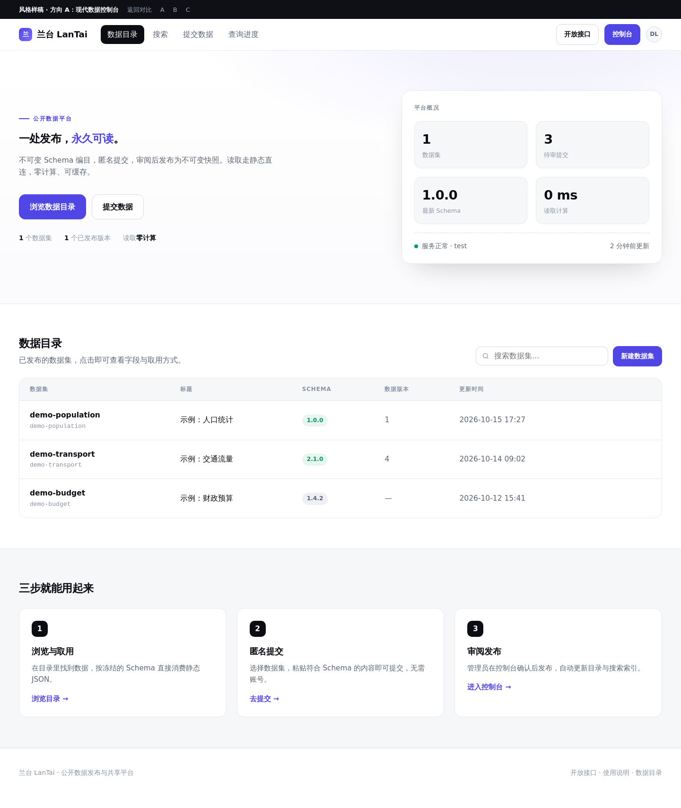
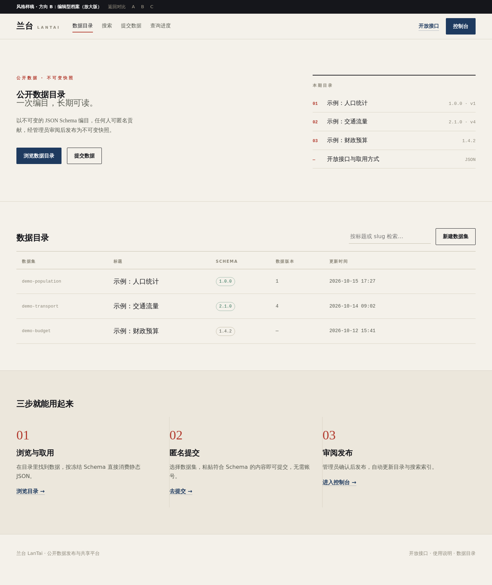
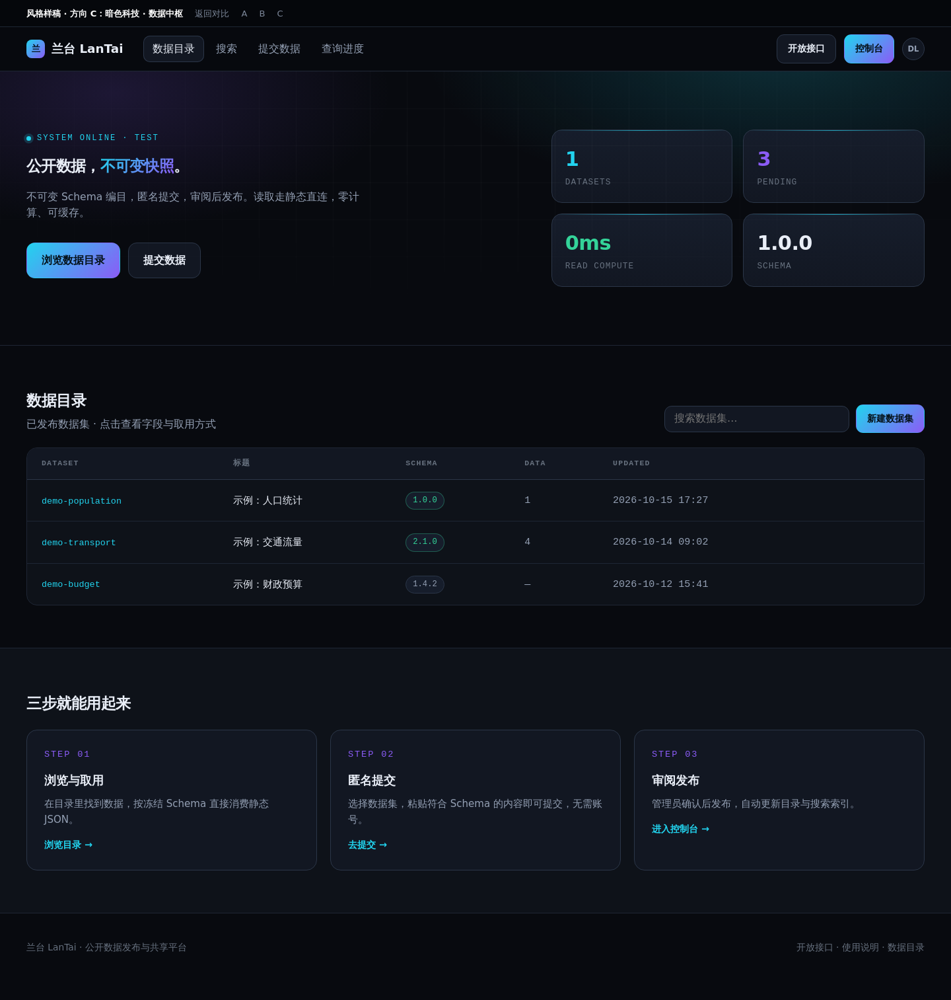

三张缩略图均以 1440px 桌面宽度 渲染（整屏宽度利用），下面按真实比例展示。点「打开交互版」可看真实全尺寸、可滚动、可点按的页面； 也可以直接打开同目录下的 a.html / b.html / c.html。
a.html
b.html
c.html
已按你的反馈更新：方向 C 的首页重做了「布局 + 交互」并重写文案 → 打开 c2.html（首页 v2） ｜ 长图：img/c2-1440.png


